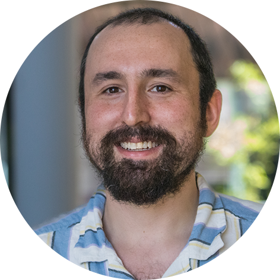

Postdoctoral Researcher
German Centre for Integrative Biodiversity Research (iDiv)
Martin Luther University Halle-Wittenberg
I am a broadly trained community ecologist working at the intersection of theoretical ecology, agroecology, and global change biology. My research seeks to develop general frameworks to understand the drivers of environmental heterogeneity, their impacts on species interactions and community assembly, and how they scale up to structure patterns of biodiversity.
At the center of my research program is the exchange between theory and natural history, with a focus on how local-scale processes such as species interactions play out in space to shape community dynamics, and what that means for how communities respond, or fail to respond, to global change drivers. A priority for my work is for it to have real-world impact; to this end I work to join theory and natural history in agricultural ecosystems such as coffee in Puerto Rico and olives in Italy, where the interactions between biodiversity and systems of production have practical consequences.
Research on coffee agroecosystems has been featured in: